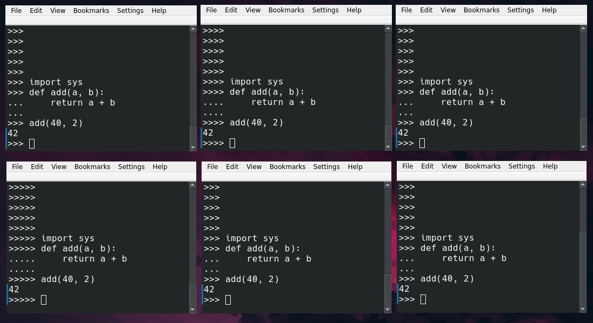

Aprendiendo sobre el núcleo de Python rompiéndolo todo:
un tour gentil y en español
Dr. Cristián Maureira-Fredes
Generando Bugs en 
@cmaureir


¿Por qué? 🤔

¿Desde cero?
HOW TO PRINT CELSIUS FROM a TO b:
PUT a, b IN lo, hi
IF lo > hi:
PUT hi, lo IN lo, hi \Swap hi and lo
FOR f IN {lo..hi}:
PUT (f-32)*5/9 IN c
WRITE f, "Fahrenheit =", 2 round c, "Celsius" /
PRINT CELSIUS FROM 40 TO 45
> 40 Fahrenheit = 4.44 Celsius
> 41 Fahrenheit = 5.00 Celsius
> 42 Fahrenheit = 5.56 Celsius
> 43 Fahrenheit = 6.11 Celsius
> 44 Fahrenheit = 6.67 Celsius
> 45 Fahrenheit = 7.22 Celsius
¿Python?
¿Python?

La estructura del repositorio CPython
- Doc - documentación oficial
- Include - archivos de cabecera del intérprete
- Grammar - Gramática PEG (PEP 617)
- Lib - stdlib en Python puro
- Modules - stdlib en C
- Objects - Tipos incorporados
- Python - Tiempo de ejecución CPython
Construyendo tu propio Python
- Clona el repositorio
git clone https://github.com/python/cpython.git - Configura el proyecto
# Puedes seleccionar un directorio de 'build' e 'install' cd cpython/ ./configure - Compila, y a disfrutar!
# Para 'X' procesos make -j X ./python Python 3.12.0a0 (Oct 1 2022, 22:56:41) [GCC 12.2.0] on linux Type "help", "copyright", "credits" or "license" for more information. >>> print("yay!") yay!
¿Qué pasa dentro?
Volvamos a la teorÃa
Decoding (1/5)
Bytes a texto
# -*- coding: latin-1 -*-
# This Python file uses the following encoding: utf-8
# coding: ascii
- PEP 263 - Defining Python Source Code Encodings
- PEP 3120 - Using UTF-8 as the default source encoding
- PEP 3131 - Supporting Non-ASCII Identifiers
Tokenizing (2/5)
Texto a palabras
x = 40 + 2
'x' '=' '40' '+' '2'
% python -m tokenize
x = 40 + 2
1,0-1,1: NAME 'x'
1,2-1,3: OP '='
1,4-1,6: NUMBER '40'
1,7-1,8: OP '+'
1,9-1,10: NUMBER '2'
1,10-1,11: NEWLINE '\n'
Parsing (3/5)
Palabras a semántica
- Gramática - docs.python.org/3.10/reference/grammar.html
- EBNF y PEG
import_stmt: import_name | import_from
import_name: 'import' dotted_as_names
# note below: the ('.' | '...') is necessary because '...' is tokenized as ELLIPSIS
import_from:
| 'from' ('.' | '...')* dotted_name 'import' import_from_targets
| 'from' ('.' | '...')+ 'import' import_from_targets
import_from_targets:
| '(' import_from_as_names [','] ')'
| import_from_as_names !','
| '*'
...
Abstract Syntax Tree (AST) (4/5)
Estructura semántica
- Zephyr ASDL - devguide.python.org/compiler/
Daniel C. Wang, Andrew W. Appel, Jeff L. Korn, and Chris S. Serra. The Zephyr Abstract Syntax Description Language. In Proceedings of the Conference on Domain-Specific Languages, pp. 213–227, 1997.
import ast
t = ast.parse("a = 40 + 2")
ast.dump(t)
# Module(body=[Assign(targets=[Name(id='a', ctx=Store())],
# value=BinOp(left=Constant(value=40, kind=None),
# op=Add(),
# right=Constant(value=2, kind=None)),
# type_comment=None)],
# type_ignores=[])
Abstract Syntax Tree (AST)
Compiling (5/5)
Bytecode a la VM
- Depende de la Máquina Virtual de CPython
- Basado en stack
def f():
a = 2
b = 40
return a + b
from dis import dis
dis(f)
1 0 RESUME 0
2 2 LOAD_CONST 1 (40)
4 STORE_FAST 0 (a)
3 6 LOAD_CONST 2 (2)
8 STORE_FAST 1 (b)
4 10 LOAD_FAST 0 (a)
12 LOAD_FAST 1 (b)
14 BINARY_OP 0 (+)
18 RETURN_VALUE
¿Por qué vine a esta charla?
¡Espera! ahora sÃ

¿Qué más podemos hacer si...
🤔
...ya aprendimos cómo funciona Python...
😰
...tenemos comunidades geniales en español...
🤩

¡Y muchas más!

...?
¿Qué acaba de pasar?

Necesitamos
un poco de C

Python y C
# Un comentario
import mi_modulo
def suma(a, b):
return a + b
def main():
msg = "hola mundo"
x = 3
y = 0.14
z = suma(x, y)
print("%f" % z)
if __name__ == "__main__":
main()
// Un comentario
#include <mi_modulo.h>
float suma(int a, float b) {
return a + b;
}
int main(){
char msg[] = "hola mundo";
int x = 3;
float y = 0.14;
float z = suma(x, y);
printf("%f", z)
return 0;
}
Python y C (+anotaciones de tipo)
# Un comentario
import mi_modulo
def suma(a: int, b: float) -> float:
return a + b
def main() -> None:
msg: str = "hola mundo"
x: int = 3
y: float = 0.14
z: float = suma(x, y)
print("%f" % z)
if __name__ == "__main__":
main()
// Un comentario
#include <mi_modulo.h>
float sum(int a, float b) {
return a + b;
}
int main(){
char msg[] = "hola mundo";
int x = 3;
float y = 0.14;
float z = suma(x, y);
printf("%f", z)
return 0;
}
Python también puede ser complicado 🥲
_="_=%r;print(_%%_)";print(_%_)
# Para un número 'n'
n&~-n<1
¿Qué es eso que se llama PyObject?
PyObject
typedef struct _object {
_PyObject_HEAD_EXTRA
Py_ssize_t ob_refcnt;
struct _typeobject *ob_type; // ?
} PyObject;
typedef struct _typeobject {
PyObject_VAR_HEAD
const char *tp_name; /* For printing, in format "." */
Py_ssize_t tp_basicsize, tp_itemsize; /* For allocation */
/* Methods to implement standard operations */
destructor tp_dealloc;
Py_ssize_t tp_vectorcall_offset;
getattrfunc tp_getattr;
setattrfunc tp_setattr;
PyAsyncMethods *tp_as_async; /* formerly known as tp_compare (Python 2)
or tp_reserved (Python 3) */
reprfunc tp_repr;
/* Method suites for standard classes */
PyNumberMethods *tp_as_number;
PySequenceMethods *tp_as_sequence;
PyMappingMethods *tp_as_mapping;
/* More standard operations (here for binary compatibility) */
hashfunc tp_hash;
ternaryfunc tp_call;
reprfunc tp_str;
getattrofunc tp_getattro;
setattrofunc tp_setattro;
/* Functions to access object as input/output buffer */
PyBufferProcs *tp_as_buffer;
/* Flags to define presence of optional/expanded features */
unsigned long tp_flags;
const char *tp_doc; /* Documentation string */
/* Assigned meaning in release 2.0 */
/* call function for all accessible objects */
traverseproc tp_traverse;
/* delete references to contained objects */
inquiry tp_clear;
/* Assigned meaning in release 2.1 */
/* rich comparisons */
richcmpfunc tp_richcompare;
/* weak reference enabler */
Py_ssize_t tp_weaklistoffset;
/* Iterators */
getiterfunc tp_iter;
iternextfunc tp_iternext;
/* Attribute descriptor and subclassing stuff */
struct PyMethodDef *tp_methods;
struct PyMemberDef *tp_members;
struct PyGetSetDef *tp_getset;
struct _typeobject *tp_base;
PyObject *tp_dict;
descrgetfunc tp_descr_get;
descrsetfunc tp_descr_set;
Py_ssize_t tp_dictoffset;
initproc tp_init;
allocfunc tp_alloc;
newfunc tp_new;
freefunc tp_free; /* Low-level free-memory routine */
inquiry tp_is_gc; /* For PyObject_IS_GC */
PyObject *tp_bases;
PyObject *tp_mro; /* method resolution order */
PyObject *tp_cache;
PyObject *tp_subclasses;
PyObject *tp_weaklist;
destructor tp_del;
/* Type attribute cache version tag. Added in version 2.6 */
unsigned int tp_version_tag;
destructor tp_finalize;
vectorcallfunc tp_vectorcall;
/* bpo-37250: kept for backwards compatibility in CPython 3.8 only */
Py_DEPRECATED(3.8) int (*tp_print)(PyObject *, FILE *, int);
#ifdef COUNT_ALLOCS
/* these must be last and never explicitly initialized */
Py_ssize_t tp_allocs;
Py_ssize_t tp_frees;
Py_ssize_t tp_maxalloc;
struct _typeobject *tp_prev;
struct _typeobject *tp_next;
#endif
} PyTypeObject;
/* The *real* layout of a type object when allocated on the heap */
typedef struct _heaptypeobject {
/* Note: there's a dependency on the order of these members
in slotptr() in typeobject.c . */
PyTypeObject ht_type;
PyAsyncMethods as_async;
PyNumberMethods as_number;
PyMappingMethods as_mapping;
PySequenceMethods as_sequence; /* as_sequence comes after as_mapping,
so that the mapping wins when both
the mapping and the sequence define
a given operator (e.g. __getitem__).
see add_operators() in typeobject.c . */
PyBufferProcs as_buffer;
PyObject *ht_name, *ht_slots, *ht_qualname;
struct _dictkeysobject *ht_cached_keys;
/* here are optional user slots, followed by the members. */
} PyHeapTypeObject;
No tienes que aprenderlo todo
Piensa en PyObject como una caja grande 📦, que se puede llenar con lo que necesites
Para un PyObject o (1/2)
- Si implementa elementos numéricos con PyNumber_ tenemos acceso a la API en docs.python.org/3/c-api/number.html
PyNumber_Check(o) // Verifica protocolos numéricos
PyNumber_Add(o1, o2) // Equivalente a o1 + o2
// Tambien para flotantes PyFloat_*
// y enteros largos PyLong_*
// ...
Para un PyObject o (2/2)
- Si implementa elementos de secuencia PySequence_ tenemos acceso a la API en docs.python.org/3/c-api/sequence.html
PySequence_Check(o) // Verifica protocolos secuencia
PySequence_GetItem(o, i) // Equivalente a o[i]
// Tambien para listas PyList_*
// y conjuntos PySet_*
// ...
¿Nuevas Features? 😮
Hay muchos otros detalles que estudiar 😵
- Conteo de referencias 🧮
- Global Interpreter Lock (GIL) 🔒
- Creación de módulos y Tipos 🤖
Ahora que nos vamos
sin dudas de la charla
no tengas miedo
de romperlo todo
Aprendiendo sobre el núcleo de Python rompiéndolo todo:
un tour gentil y en español
Dr. Cristián Maureira-Fredes
@cmaureir